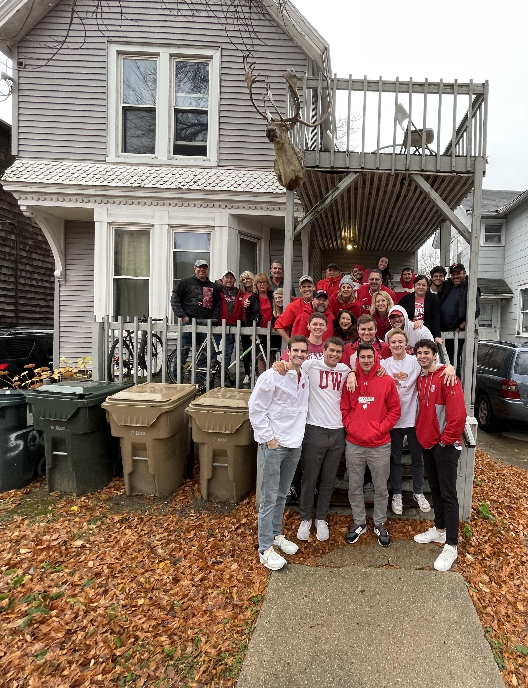

Hi, I'm Sam Thut
I am creating this website to inform you mainly about myself and my roomates upstairs, but also a little about our house as a whole.
- Name:
- Sam Thut (Red Cap with White Hood Up)
- Hometown:
- Hales Corners, WI
- Occupation:
- Student / Bouncer at Mondays
- Education:
- I am currently completing my bachelor's degree in Human Geography from UW-Madison. Afterwards, I will be completing my Fire Service Certification during the summer of 2023 at Madison Technical College with the completion of the EMT program and the Fire Academy.
- Interests:
- Hunting, Fishing, Video Games, Cooking, Working Out
- About Our House
- First off... Yes, we have a mounted caribou hanging off of our front balcony. Other than that, our house is comprised of two seperate units (one on each floor) that each consist of four bedrooms, a kitchen, a living room, and one bathroom. Ryan, Limi, and I have all been roommates since sophomore year when we lived in room 903 at the Embassy while our other roommate Josh lived with the neighbors downstairs at Grand Central. All eight of us in the house have been friends since freshman year of college and decided that junior year we would want to all get a house together on Mifflin Street. After looking for a month or so, we decided on this house due to the affordability, the fact that parking was included, and that we wouldn't be paying for water or heat as we have aboiler and not a furnace. Living together for almost two years has been great because we love to hangout all the time and all get along great (yes, including the neighbors downstairs). Furthermore, we all have families that get along great and we love hosting events like Parents Weekends where everyone can all hang out together. Most of our favorite things to do include travellings such as driving to Milwaukee for a Bucks or Brewers game, OR travelling north about an hour and a half to spend time at my lake or nearby at Ryan's cabin in the middle of the woods.